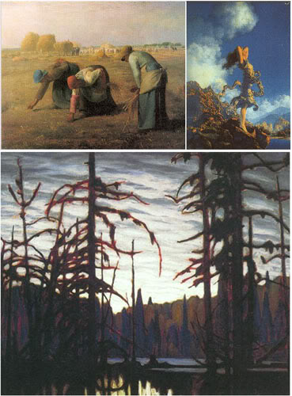

En Plein Air
The last few years have seen an amazing improvement in the fundamentals of shading. We could summarize these improvements in general as reduction of artifacts and richness of rendering. Reduction of artifacts has improved through tesselation, filtering, and depth and transparency rendering. Richness has increased through higher geometry and texture throughput, and increases in shader program length allowing for a dramatic increase in the number of lights that can be computed. Shading is fundamentally concerned with the appearances of surfaces.
Moving beyond Surfaces
There's a completely different way of looking at the rendering of a scene. This method is common in landscape painting and matte painting in film. It is the notion of painting the air between the surfaces instead of the surfaces themselves. This technique became well known with the advent of the en plein air painters who advocated taking paint and canvas outside to paint from nature. Amusingly, this advance in painting was brought about by another technological revolution: the availability of paint in tubes supplanting the previous paradigm of artists mixing paints from powders, oils, and eggwhites!
The values of the surfaces themselves are not represented in these paintings, but rather the interaction of light with the intervening medium. As long as rendering technologies remain focused on surfaces, these well understood properties of beautiful images can only be indirectly approximated, using imperfect tricks such as adding a fog term to a surface shader.
A powerful compositing pipeline will be required to pull off a real time engine which can render participating media with light. Multiple layers must be individually rendered, with specific post processing between every pass. Partitioning the scene in depth, and the management of techniques such as scrims and a great variety of full screen post processes must be mastered. Avoiding artifacts between layers is a challenge here.

Dan Curry talks about rendering with light instead of surfaces roughly half way through a fxguide podcast, available here.
The Four S's of Rendering
Next, I identify the four modern paradigms for rendering engines, and draw a conclusion vis a vis how to approach next generation rendering hardware from an application/game programming standpoint.
In quick summary, the four paradigms are:
- State Management Libraries
- Scene Management Libraries
- Shader Systems
- Submission Engines
State Management Libraries
State management APIs abstract an idealized model of the hardware as a state machine, and expose the management of that virtual hardware to the graphics programmer. Some of the earliest rendering APIs such as OpenGL are in this category. DirectX is another example of a state management API.
It is a stretch to represent a state management library as a rendering engine, but a survey of the hundreds of render engines on the internet shows that a good proportion of them are state management libraries.
Scene Management Libraries
Scene management engines are sometimes called retained mode renderers, although this term is falling out of favor. Early realtime APIs such as RenderMorphics were retained mode. OpenInventor heavily inspired this line of development, with its notions of transformational hierarchy.
Several modern render engines such as Ogre fall into this category. These engines are the most intrusive into your application program, forcing you to either adopt their scene representation, or to wrap the scene representation in a manager that feeds the underlying scene representation. These systems often attempt to provide extensibility or flexibility through a plugins system, whereby a base node or manager such as a shadow manager allow overriding through subclassing or callbacks.
The pitfall here is that in general, these kinds of systems are only extensible through introducing complexity. More nodes and managers must be introduced, and then the interactions and marshalling of existing nodes and managers must be accomplished through delegation, spoofing, or rewriting the core systems.
Shader Systems
A scene is described as a light transport problem, as formulated by Kajiya in 1986 (Kajiya, J. T. The rendering equation. Computer Graphics 20, 3. Aug. 1986, 143-149). There are three categories of shader defined.
-
Light source shaders. Calculate the lighting term, which is the color and intensity of light emitted from a source in a particular direction.
-
Surface shaders. Calculate the integral of the bidirectional reflectance function with the incoming light distribution.
- Volume shaders. Calculate scattering effects through participating media such as dusty air, salty water, fog, and smoke. Other participating media include translucent materials such as marble, skin, and plants.
The predominant example of a shader based render engine is Renderman, although others exist; all are currently offline rendering systems.
These systems are predicated on being able to fully describe a scene in a mathematically pure way. For example, a typical approach to introducing a new geometry file format to Renderman is to write a surface shader DSO to interpret the custom file.
Optimization of such a scene must occur at a full scene level after all data has been submitted and all shaders run, since for example no geometry exists until all geometry shaders have run. The use of a shader system for real time rendering is therefore fundamentally intractable.
Submission Engines
Submission based engines combine features of scene management systems, and shader systems. Every frame, what to draw is presented anew to the render engine, in the form of a list of things to render, and composite operations. Things to render are bound tuples of lights to use, things to shade, and materials to shade with. A reference to a compiled submission list is also a possible thing to insert into a submission list. Composite operations are like fences in the rendering queue; typical operations are to target a particular framebuffer, to clear the depth buffer, or to perform a blend operation between existing framebuffers. Additionally, a submission list has ordering hints associated with objects in the list, such as pass information – for example, a particular object may render on a sky dome layer that has a depth buffer clear operation invoked after the sky dome layer has rendered.
Submission APIs wrap a state management API, but do not expose the state management API in any way to the programmer.
Similarly to a shader based system, the things in the list are bound tuples bracketed with render start and end tokens. Similarly to a scene management system, a submission list may have submission lists within it, although there is no transformation hierarchy involved, nor is there persistent state change as might occur through a state management API. A well developed submission engine will provide a compile step, like an OpenGL display list. These precompiled submission lists potentially concatenate state information in a manner that allows fastest possible submission to the state management API. For example, on Xbox or X360, the compilation step bakes out a monolithic state block for the push buffers.
What is fundamentally different from a shader system is that it is up to the submission engine to manage and bind shaders and hardware state as appropriate. What is fundamentally different from a scene management system is that the described scene is not managed via a persistent scene model visible to the programmer. In other words, there are no nodes to manage, and the scene is presented to the submission engine fresh every frame. The submission engine can cache, hint, and manage state internally to optimize the submissions.
Many game companies use submission engines internally for high performance. I am not aware of any publicly available submission engines.
Conclusion
Today's biggest challenge in real time rendering is multiprocessing. Please refer to my article “Gaming Graphics: Road to Revolution” (ACM Queue vol. 2, no. 2 - April 2004), for a discussion of real time parallelism. I argue in that article that a modern render engine must implement efficient compositing and Sort Last parallelism to fully utilize modern parallel hardware. I feel that conclusion is more true now than ever, now that we know what challenges we face on the newest game consoles.
Today, I advocate a Submission Engine approach for a rendering API, driving a composite/sort last optimizer, which in turn writes through to a state management library.
28 June, 2008: I note that Johannes Spohr has built a submission engine parallel renderer for his thesis work. It's a good read, I was particularly interested in his observations on how his system scales.